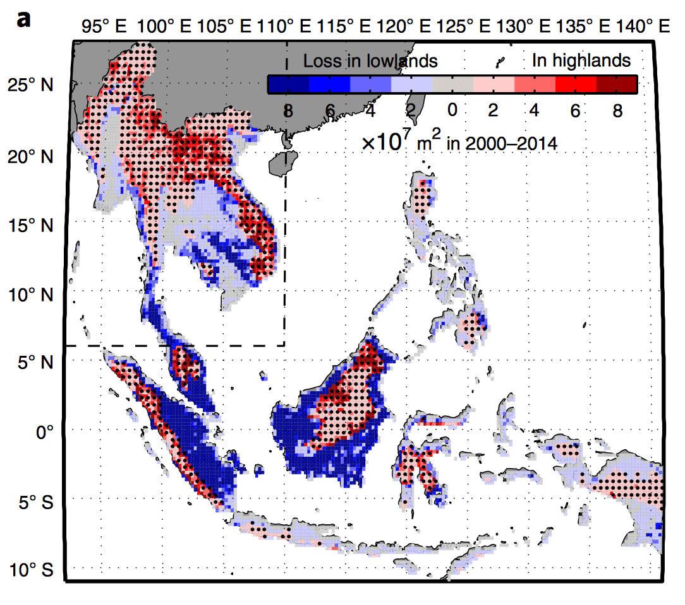

Satellite datasets have determined that between 2001 to 2019, around
61 million hectares of tropical forests have been lost in the
mountains of Southeast Asia.
Worldwide, tropical forests store up to 247 billion tons of carbon.
However, these forests are under threat—not just in the infamous
Amazon Rainforest, but high up in the mountains of Southeast Asia,
where half of the Earth’s tropical mountain forests are located.
Agricultural expansion into highlands are rarely studied, and often
vegetative maps which monitor land-use change in these areas cannot
distinguish natural trees from taller perennial plantation crops, such
as rubber, palm oil, and fruit trees.
Palm oil plantations near Sentabai Village, West Kalimantan (2017) | Nanang Sujana / CIFOR.
A new study by Feng et al., used advanced satellite mapping technology
to map vegetative cover across the mountainous landscapes of Southeast
Asia over the last twenty years. The team found that 3.22 million
hectares of tropical mountain forests are being deforested annually,
causing a carbon storage loss of 424 million tons per year.
Tropical forest loss, particularly in South America and Southeast
Asia, is driven by anthropogenic factors, the primary being
agricultural intensification, illegal logging and uncontrolled
extraction of other natural resources. The images showed that the most
tropical mountain forest loss is occurring in East Sumatra and
Kalimantan, Northern Laos, Northeast Myanmar and Thailand—with
Indonesia being the biggest contributor.
Forest loss encompasses loss of primary forests—untouched forests in
their original state—, secondary forest disturbance—forests which have
been affected by human activity in the past but had time to somewhat
recover—, and forests dominated by palm oil and rubber plantations.
‘3.22 million hectares of tropical mountain forests are being deforested annually.’
Between 2001 to 2019, 0.93 million hectares of primary forests in
mountain habitats were lost annually. Primary forests are the most
vital type of forest in sequestering carbon, as
recent studies
found that in the Amazon Rainforest, it takes secondary forests, which
have been affected by slash-and-burn agricultural practices, around
50 to 100 years to recover and reach the carbon storage potential of
their primary forest counterparts. However, despite this significant
loss, it was secondary forests which caused the majority of the
recorded hectare loss of tropical mountain forests.
Forests in lowland areas of Southeast Asia had a higher deforestation
rate in comparison to the highland tropical forests in the 2000s.
While this did decrease in the 2010s, there was no significant change.
As of 2010, the number of tropical forests at lower altitudes began
to decrease as a result of the mass deforestation, which has resulted
in an upwards shift in elevation with regard to forest loss. In the
2010s, forest loss at higher elevations has doubled compared to rates
seen during the 2000s, and forest loss is occurring at an increased
altitude of 15.1 meters per year.
Another recent study observed that between 2001 to 2016, Thailand’s
Nan Province, which borders Laos, experienced a loss of 66,072
hectares of tropical mountain forests. The forest loss rate in Nan
Province increased by 12-times between 2001 and 2012, with 75% of the
mountain region area being converted to upland crops.

Areas in Southeast Asia experiencing forest loss due to agricultural
expansion and illegal logging. Blue represents lowland forest cover
loss and red indicates mountain highland forest cover loss (above
300 meters altitude). | Zheng et al. (2018) / Nature Geoscience.
Usually, increased cropland is due to population trends and the
increased demand for food, fuel, animal feed and timber. However, in
Nan Province, the local population was actually decreasing over this
15-year period. The team instead found that forest cover loss was
closely linked to increases in domestic corn price, which drove
farmers to clear forests in order to bring the price down. When the
price decreased again in 2012, forest loss in Nan Province followed
suit and significantly decreased as well.
This case study indicates that some areas experiencing heavy
deforestation are sensitive to global market changes, rather than
population trends. As the Thai Government could not support the
farmers going through financial losses, they could not stop the
resulting deforestation occurring when people tried securing their
livelihoods.
Thus, whilst governments must actively protect and restore their
forests, it is essential to also provide social welfare schemes in
order to protect upland farmers. Additionally, improved water
management and irrigation systems would allow farmers to also produce
a greater variety of crops year-round, rather than being confined to
one season to grow corn. Being the world’s largest rice exporter,
high-quality water from Thailand’s mountains is critical in supplying
the country’s rice paddy fields.
‘Government funded social welfare schemes are essential to protecting
the livelihood of upland farmers.’
Agricultural expansion into the higher altitudes of mountains in
Southeast Asia is not even the most logical solution for maximum crop
yields. The higher altitudes, which means less oxygen availability
for the crops, alongside the steep slopes, which exacerbates soil
erosion, and the lower temperatures, do not offer an ideal growth
environment for crops which would otherwise be grown in lowland areas.
Thus, although this expansion is happening, it is not economically
feasible.
The fact that these mountainous climates are not ideal for croplands
in the first place, means that farmers will also need to increase
their input of fertilizers to maximize their yields. The resulting
soil erosion and flooding may also transport these chemicals into
freshwater systems and contaminate drinking waters.
Increases in agricultural expansion are also occurring, despite the
numbers of protected areas in Southeast Asia between 1999 to 2015
growing from 96 to 147. As such, Southeast Asia must implement schemes
which convert mountain farmlands back to forests. In China, the
‘Sloping Land Conversion Program (SLCP)’ has been a milestone in
restoring forests, with the state investing $23.2 billion and
converting 8 million hectares of croplands back into forests.
Deforested mountain terrain for agricultural expansion, Tianlin
County, Guangxi Zhuang Autonomous Region, China. | Nick Hogarth / CIFOR
China’s SLCP provided monetary incentive for farmers to take action
in reforesting their own croplands, with over 26 million households
participating in the scheme. Under the scheme, the state pays farmers
to allocate a certain proportion of their land to growing and managing
trees that occur naturally in the region—a practice known as agroforestry.
If we continue with the ‘business as usual’ approach, the current
rates of deforestation will continue to cause the loss of mountain
ecosystem services and the biodiversity living there, threaten human
livelihoods and lead to the alteration of natural hydrogeomorphic
patterns. We are already seeing exponential climate change-driven
rainfall increases across Germany, the Netherlands, Belgium,
Switzerland, Southeast England and China.
Plants, and particularly trees, are natural flood mitigators, retaining
vast amounts of rainfall from the ground’s surface. However, with
forestless mountains, heavy rainfall and melting glaciers threaten to
entirely flow downstream into valleys and populated areas. Additionally,
the land-use change resulting from converting forest to cropland will
also increase the risk of landslides, which will be another serious
and potentially devastating threat when paired with the future
uncontrollable rainfall.
‘Forestless mountains will cause heavy rainfall and melting glaciers to entirely flow downstream into valleys and populated areas.’
The satellite datasets have found that the amount of carbon currently
sequestered in Southeast Asia’s tropical mountain forests, equals the
same amount as that currently being released as a result of tropical
forest loss. This means that the effects of forest loss are currently
neutralizing the benefits of these forest’s carbon sink potential.
However, this could change for the worse when even more forests are
deforested. Soon more carbon will be released from our Earth’s carbon
sinks, rather than absorbed.
Featured Image: Rising Thermals / Flickr
Feng Y., Ziegler A., Elsen P., Liu A. et al. (2021) Upward expansion
and acceleration of forest clearance in the mountains of Southeast Asia.
Nature Sustainability.
He J. (2014) Governing forest restoration: Local case studies of
sloping land conversion program in Southwest China.
Forest Policy and Economics. Volume 46, pages 30-38.
Zeng Z., Gower D. and Wood E. (2018) Accelerating forest loss in
Southeast Asian Massif in the 21st century: A case study in Nan
Province, Thailand. Global Change Biology. DOI: 10.1111/gcb.14366
Zeng Z., Estes L., Ziegler A., Chen A., et al. (2018) Highland
cropland expansion and forest loss in Southeast Asia in the
twenty-first century. Nature Geoscience. Volume 11, pages 556-562.